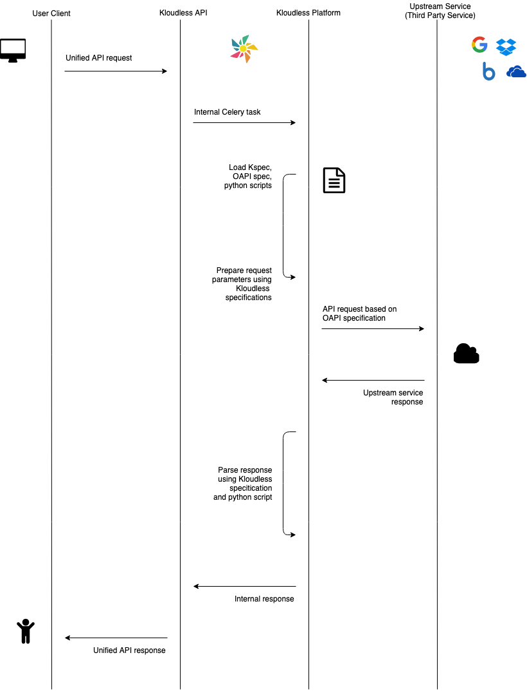

Kloudless
Custom Connector Documentation
# Introduction
# What is the Kloudless Custom Connector?
At Kloudless, we provide integrations across many different services and APIs.
However if there is a specific service that is unavailable, it is possible to have its API integrated using Kloudless' Custom Connectors as well. Once the custom connector has been successfully implemented you can then connect service accounts of your choosing to take advantage of it in the Kloudless integrated environment alongside our other existing API.
# How Does It Work?
The Kloudless Custom Connector requires additional specification files and scripts to be able to integrate additional services so it can work as part of Kloudless' unified API.
Below is a diagram of how a request for a custom connector service works:

Custom Connector is composed of a few separate things:
- An OpenAPI Specification of the upstream service API you want to use.
- A Kloudless Specification file describing the behavior, properties and format mappings/transformations of the service.
- A Python SDK Script with routing and endpoint pre/post-processing logic.
# Quickstart/Tutorial
To get started with the Custom Connector, we recommend hopping into the Quickstart Guide!